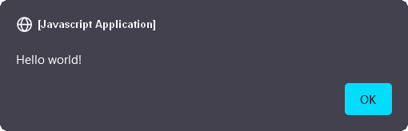

{{ APIRef }}
window.alert() instructs the browser to display a dialog with an optional message, and to wait until the user dismisses the dialog.
Under some conditions — for example, when the user switches tabs — the browser may not actually display a dialog, or may not wait for the user to dismiss the dialog.
window.alert(message);
message {{optional_inline}}window.alert("Hello world!");
alert("Hello world!");
Both produce:

The alert dialog should be used for messages which do not require any response on the part of the user, other than the acknowledgement of the message.
The following text is shared between this article, DOM:window.prompt and DOM:window.confirm Dialog boxes are modal windows - they prevent the user from accessing the rest of the program's interface until the dialog box is closed. For this reason, you should not overuse any function that creates a dialog box (or modal window).
| Specification | Status | Comment |
|---|---|---|
| {{SpecName('HTML WHATWG', 'timers-and-user-prompts.html#dom-alert', 'alert()')}} | {{Spec2('HTML WHATWG')}} |
{{Compat}}